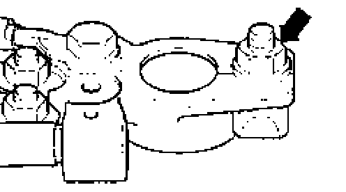
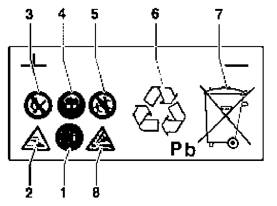

Technician Safety Information
Battery handling instructions
CAUTION! Before working on the electrical system:
- Obtain radio anti-theft code.
- Ignition OFF!
- Disconnect battery Ground (GND) strap.
Notes:
- Battery terminal clamps must only be fitted by hand without force in order to prevent damage to the battery housing.
- Battery terminals must no longer be greased.

- Tightening torque for all battery terminal clamps: 5 Nm (44 in. lb).
- After reconnecting battery:
- Activate vehicle vehicle equipment such as radio, clock and power windows.
- On vehicles equipped with OBD II, activate readiness code.
-------------------------------------------------------------
Warnings and safety measures for handling lead-acid batteries

1 - Read and follow all instructions regarding the battery that are contained in this Repair Manual and in the Owner's Manual.
2 - Danger from acid burns:
- When working with electrolyte always wear eye protection and rubber gloves.
- Never tip a battery on edge. Electrolyte can spill from the ventilation openings.
3 - Keep open flames and sparks away and DO NOT smoke near batteries!
- Avoid sparks when working with cables and electrical units.
- Avoid short circuits.
4 - Wear eye protection.
5 - Keep children away from acid and batteries.
6 - Disposal:
- Waste batteries must only be disposed of in appropriate waste disposal sites. Refer to local regulations pertaining to battery disposal.
7 - Never dispose of old batteries in household waste!
8 - Danger of explosion:
- A highly explosive gas is produced when charging batteries.